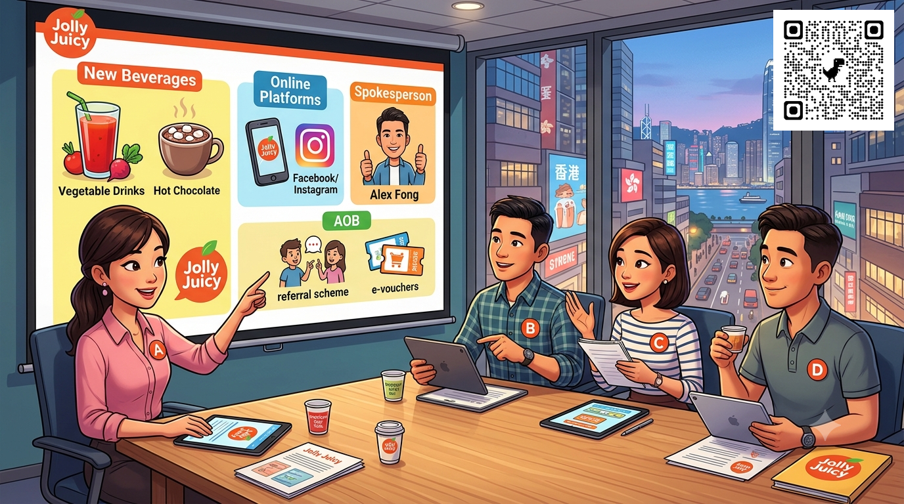

You are on the marketing team of Jolly Juicy, a beverage shop in Hong Kong. You and your colleagues are going to hold a meeting to discuss plans to expand the business. You should:
As a group, you must cover all the agenda items below.
Possible tactics:
Ways to attract new customers:
A group discussion on new beverages, promotion tactics and ways to attract new customers.
A ✗ marks the incorrect form (e.g. can + bought), which should be the bare infinitive (e.g. can buy).
Contractions: Let's = let us, That's = that is, I'm = I am, We've = we have, I can't = I cannot.
Communicative functions (e.g. making suggestions, showing agreement, giving reasons) are highlighted in the italic blue line next to each speaker's turn.
Well… Ummm… uhhhh…
+ action verb (bare infinitive) + object (noun clause), e.g. Customers can buy our new drinks at a cheaper price.